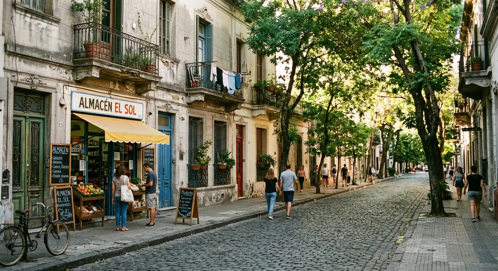
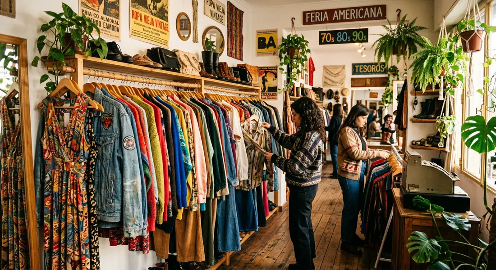
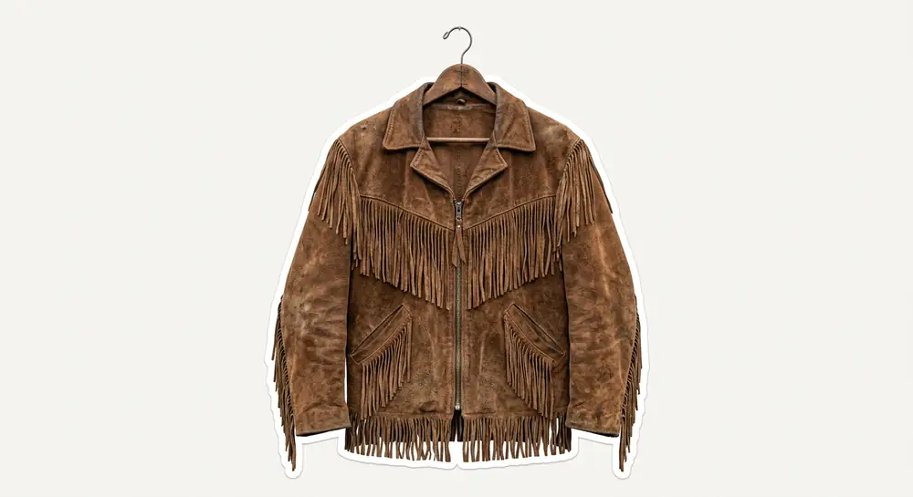

%20(1).png)
Ropa vintage y segunda mano en Buenos Aires.
Encontrá locales a la calle, filtrá por barrio, prendas y precios, y armá tu recorrido.
Estamos cargando los locales.
Cargando el mapa de Buenos Aires…
Podés usar + y − para acercar. Activá el desplazamiento para mover el mapa; desactivalo para seguir bajando.
Locales a la calle de ropa vintage y segunda mano en CABA. No incluimos showrooms ni tiendas exclusivamente online.
De perchero en perchero ✳︎ Vintage y segunda mano ✳︎ Buenos Aires para recorrer ✳︎ Acceso libre y gratuito ✳︎
Armá tu recorrido.
Elegí qué querés encontrar, cuánto tiempo tenés y por dónde te gustaría caminar. Te proponemos un paseo entre locales del mapa.

Buenos Aires para recorrer,
de perchero en perchero.
Distancias aproximadas: línea geográfica × 1,3; caminata a 4 km/h y 25 minutos de visita por parada. No se verificó la apertura. Google Maps calcula el trayecto por calles.
Agenda.
Ferias y encuentros para sumar a tu próximo paseo.
Todavía no hay próximas fechas publicadas. Si conocés una feria o estás organizando un evento, podés compartirlo.
Glosario
En el universo de lo vintage circulan términos que se usan de forma intercambiable pero que no quieren decir exactamente lo mismo. Esta guía es un diccionario para entender esas diferencias.
Vintage
Mínimo 20 años de antigüedad. Ropa que refleja fielmente el diseño, técnicas de confección o materiales de su época. Terminaciones que la industria rápida abandonó (cierres metálicos, botones de nácar, tejidos puros).
Retro
Fabricación reciente o contemporánea. Indumentaria actual que recrea la estética o tendencias del pasado. No posee valor histórico.
Antiguo
Un siglo o más de historia. Tiene un valor más cercano al coleccionismo, la conservación museística o histórica.
Segunda Mano / Thrift
Sin restricción de antigüedad. Prendas que regresan al circuito de consumo alargando su ciclo de vida y promoviendo la economía circular y precios accesibles.
Upcycling
Confección artesanal y rediseño a partir de descarte textil para producir piezas de autor nuevas y exclusivas.
Cómo cuidar tu ropa.
La ropa dura cuando mejor la cuidás. Antes de lavar una prenda, mirá su etiqueta, identificá de qué está hecha y preguntate si realmente necesita pasar por el agua. A veces, ventilarla alcanza. Otras, un cambio en la forma de secarla o guardarla puede hacer toda la diferencia.
Seda
La seda es una fibra natural extremadamente delicada. Si la etiqueta lo permite, lavala siempre a mano, con agua fría y jabón neutro para prendas delicadas. Nunca la retuerzas ni la escurras, dejala secar por goteo, en una percha y siempre a la sombra. Evitá el sol directo, la secadora y los secadores de pelo, que pueden dañar y decolorar el tejido. No la planches. Si la dejás secar correctamente, podés aprovechar su caída natural y ahorrarte ese paso, te va a quedar impecable.
Satén o raso
El satén no es una fibra, sino una forma de tejido: puede estar hecho de seda, poliéster o acetato. Por eso, antes de lavarlo, revisá su composición. Si es de seda, seguí los cuidados de esa fibra. Si es sintético, puede admitir lavarropas en un ciclo delicado y con agua fría, siempre que la etiqueta lo indique. Usá detergente líquido suave y evitá retorcer la prenda. Para secarla, colgala por goteo en una percha y a la sombra. Evitá la secadora y, si podés, también la plancha, el calor puede alterar su textura y su brillo.
Lana
La lana repele la suciedad de forma natural, así que no necesita lavarse después de cada uso. Muchas veces, ventilarla alcanza. Cuando toque lavarla, hacelo a mano con agua fría y jabón neutro, o usá el programa específico para lana si la etiqueta permite el lavarropas. Evitá el centrifugado y nunca la cuelgues mojada: el peso del agua puede deformar las fibras. Para secarla, retirale el exceso de agua con una toalla y dejala extendida en horizontal. Guardá los sweaters doblados, nunca en perchas, para que no pierdan su forma. La lavanda puede ayudar a mantener las polillas alejadas y perfumar el armario. Evitá la naftalina.
Cashmere
El cashmere necesita cuidados similares a los de la lana, pero conviene priorizar el lavado a mano. Usá agua fría y jabón neutro para prendas delicadas, masajeando suavemente sin frotar ni restregar. Para secarlo, enrollá el sweater en una toalla y presioná para absorber el exceso de agua, después, dejalo extendido sobre una superficie plana, sin tironear las fibras. Es normal que el roce genere pilling (esas bolitas que hacen ver tu prenda vieja). Retiralas con un peine específico para cashmere o una máquina quitapelusas, sin abusar para no desgastar el tejido. Guardalo limpio, seco y doblado.
Lino
El lino es resistente, fresco y transpirable, aunque tiene una particularidad: se arruga con facilidad. Y sí, esas arrugas son parte de su encanto. Podés lavarlo en lavarropas con un ciclo delicado, agua fría y centrifugado suave. Evitá el calor porque puede encoger. Para secarlo, colgalo bien estirado o dejalo en plano, a la sombra. Si necesitás plancharlo, hacelo del revés y mientras todavía esté húmedo, con temperatura media-alta y vapor, siempre que la composición lo permita. Así las fibras se relajan y las arrugas salen más fácilmente. Si te encanta la ropa sin arrugas, el lino no es para vos.
Denim / jean
El jean no necesita lavarse después de cada uso. Si no está sucio, podés airearlo y volver a usarlo: así ayudás a preservar el color y la forma. Cuando lo laves, hacelo del revés, con agua fría y, especialmente si es nuevo u oscuro, por separado para evitar que destiña sobre otras prendas. Evitá los suavizantes, que pueden afectar las fibras elásticas de los jeans con elastano. Para secarlo, colgalo del revés y al aire libre, sin recurrir a la secadora: el calor puede encoger el tejido y acortar su vida útil. La plancha generalmente no hace falta. Si la usás, elegí una temperatura media y hacelo del revés.
Algodón
El algodón es versátil y resistente, pero también puede encogerse con el calor. Para conservar tus prendas, lavalas según la etiqueta y, cuando sea posible, con agua fría o tibia. Separá los colores claros de los oscuros y evitá sobrecargar el lavarropas. Para secarlas, el aire suele ser suficiente y ayuda a reducir el desgaste. Si la prenda tiene estampas, bordados o detalles delicados, lavarla del revés es un buen recurso para protegerlos.
Microtul
El microtul es liviano y delicado: un cierre, un gancho o un roce fuerte pueden engancharlo. Lavá tu prenda a mano con agua fría y jabón suave, sin frotar ni retorcer. Si vas a recurrir al lavarropas, usá una bolsa de lavado para proteger la malla. Dejala secar al aire y a la sombra. Evitá la secadora y nunca, jamás, la planches. Para guardarla, doblala con cuidado y mantenela separada de accesorios que puedan engancharla.
Prendas plisadas
Los pliegues son parte del diseño, así que el objetivo es conservarlos. Antes de lavar una prenda plisada, revisá la etiqueta: según la tela y el tipo de plisado, puede necesitar limpieza profesional. Evitá retorcerla, aplastarla o dejarla amontonada mientras está húmeda. Para guardarla, colgala si la estructura lo permite y asegurate de que tenga espacio para que los pliegues no se deformen. No la planches directamente ni intentes rehacer los pliegues con calor sin conocer la composición: podés alterar su forma original.
Tapados de lana
Un buen tapado puede acompañarte durante años. Después de usarlo, dejalo ventilar y retirale el polvo con un cepillo suave. No necesita lavarse seguido, y muchas veces alcanza con airearlo. Antes de limpiarlo, revisá la etiqueta: por su estructura, forro y entretelas, algunos tapados necesitan limpieza profesional. Al terminar la temporada, guardalo limpio y completamente seco, en una percha ancha que sostenga bien los hombros. Mantenelo en un lugar ventilado y sin humedad. Para prevenir polillas, podés sumar una bolsita de lavanda al armario, sin que esté en contacto directo con la prenda.
Ropa interior
La ropa interior necesita una limpieza frecuente, pero eso no significa que todas las piezas deban tratarse igual. El algodón suele resistir mejor el lavado cotidiano, mientras que el encaje, la microfibra y los elásticos delicados necesitan menos fricción. Si usás lavarropas, colocá los corpiños en una bolsa de lavado y cerrá los ganchos para que no se enganchen con otras prendas. Evitá retorcerlos y dejalos secar al aire. En los corpiños, no los cuelgues de los breteles cuando están mojados: el peso puede estirarlos y hacerles perder sujeción.
Trajes de baño
El cloro, la sal y los protectores solares pueden deteriorar las fibras elásticas y alterar los colores. Después de cada uso, enjuagá la malla con agua fría para retirar los residuos. Lavala a mano con jabón suave cuando corresponda y no la retuerzas para escurrirla. Dejala secar a la sombra, lejos de fuentes de calor: el sol directo y la secadora pueden debilitar el elastano. Y un detalle clave: no la guardes húmeda ni hecha un bollo en una bolsa. Antes de guardarla hasta el próximo verano, asegurate de que esté completamente seca.
Calzado de cuero
El cuero necesita limpieza suave, ventilación y protección frente a la humedad. Después de usar tus zapatos, retirales el polvo con un paño seco o un cepillo adecuado y dejalos airearse antes de guardarlos. Si se mojan, no los acerques a una estufa ni uses secador: rellenalos con papel limpio para absorber la humedad y dejalos secar a temperatura ambiente. Cuando el material lo permita, aplicá una crema específica para cuero, probándola primero en una zona poco visible. Guardalos lejos del sol directo y sin apretarlos contra otros pares. Si son de gamuza, charol u otro acabado especial, usá productos específicos para ese material.
Materiales y tejidos
Elegí una muestra o pasá con las flechas.
Prendas y piezas
Elegí una pieza para leer su cuidado. Para las telas, usá el muestrario.
Antes de lavar, revisá siempre la etiqueta de cuidado y la composición de la prenda.
Lo que encontramos.
Este muro está por empezar. ¿Compartís el primer hallazgo?
Compartí
tu hallazgo.
Una prenda heredada, una mezcla inesperada o ese hallazgo que no te sacás más. Un muro para compartir cómo lo llevamos.
Reviso los aportes antes de publicarlos. Compartí una foto propia o que tengas permiso de usar.
Detrás del mapa.
Hay una persona detrás de esta selección y una ciudad para seguir descubriendo.
Conocé el proyecto ↗

Sobre el proyecto
Soy Lucia, estudio Ciencias de la Comunicación en la UBA y estoy armando Mapa Vintage para reunir esa información que suele quedar desperdigada entre redes, recomendaciones y capturas de pantalla.
Me interesa la mezcla: una prenda nueva con otra usada, algo heredado con algo que encontraste de casualidad. Comprar segunda mano puede ser una forma de ahorrar, encontrar buena calidad o llevar algo que te representa. No hace falta saber de décadas ni vestirse de una sola manera para disfrutarlo.
El mapa busca facilitar esa primera parte de la búsqueda. Después viene lo que ninguna pantalla reemplaza: caminar, mirar los percheros, tocar las telas y probarte la ropa.
Es un proyecto de acceso libre y gratuito que también crece con los lugares y hallazgos que otras personas comparten.
Notas al margen.
Apuntes breves sobre ropa, recorridos y cosas que me voy encontrando.
Todavía no hay notas publicadas.
Sumá un espacio.
¿Tenés un local o conocés uno que falta? También podés compartir ferias y eventos para la agenda. Revisamos cada propuesta antes de publicarla.
El directorio reúne locales a la calle de ropa vintage y segunda mano en CABA, con al menos un 60% del catálogo dedicado a estas prendas. Las ferias y eventos se reciben para la agenda. No incluimos showrooms con cita previa ni tiendas que funcionen solo online.